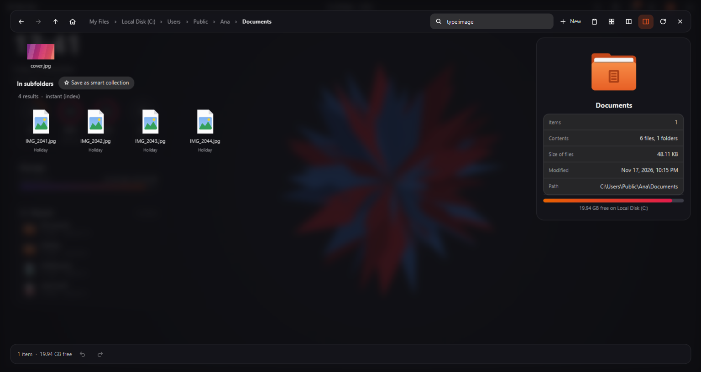

Search and smart collections
The search box is in the My Files toolbar. It filters the current folder as you type and also looks in the subfolders. In the Overview it searches your whole home folder.
Accents and upper case are ignored: relatorio finds "Relatório".

Filters#
Filters can be combined with words and with each other, for example invoice type:document modified:month size>200kb.
| Filter | Examples | Finds |
|---|---|---|
type: | type:image type:video type:music type:document type:archive type:code type:app type:folder | Items of that kind |
ext: or *. | ext:pdf *.docx | Files with that extension |
size> size< | size>2mb size<500kb size>1gb | Files bigger or smaller (kb, mb, gb, tb) |
modified: | modified:today yesterday week month year 2025 old | Files changed in that period |
tag: | tag:Work | Files with that tag |
content: | content:"monthly report" | Files that contain the text |
The filter names also work in Portuguese, Spanish and French: tipo:imagem, tamanho>2mb, modificado:hoje, etiqueta:Trabalho, conteudo:"texto", and so on.
Searching inside files#
Write content:"text", or search for a name and press the button Search "…" inside the files that appears below the results. FileExp shows each file that contains the text and the line where it appears. It reads text files, code, CSV, JSON, XML and similar files, also in old encodings (Latin-1), and Office documents: Word (DOCX), Excel (XLSX), PowerPoint (PPTX) and LibreOffice (ODT, ODS, ODP).
The home index#
FileExp builds an index of your home folder in the background, so searches show results instantly instead of walking through the folders each time. The index is updated as files change. Program folders such as .git, AppData, .cache and the data of FileExp itself are skipped.
Smart collections#
A smart collection is a saved search that is always up to date: "PDFs of this week", "Big videos", tag:Work…
- Search for what you want, for example
type:video size>500mb. - Press Save as smart collection and give it a name.
- The collection appears in the Overview; open it at any time to see the current results.
When you have none yet, the Overview offers examples you can create with one click.